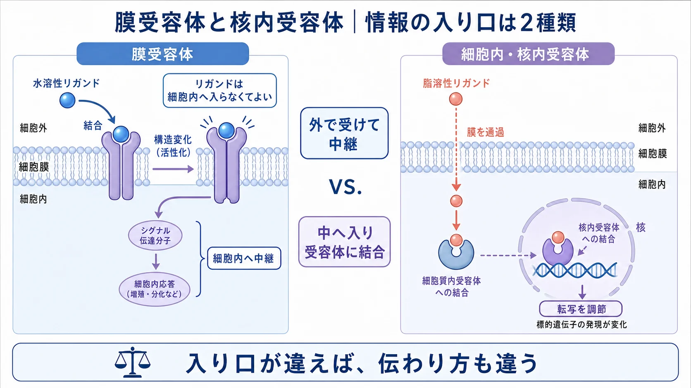
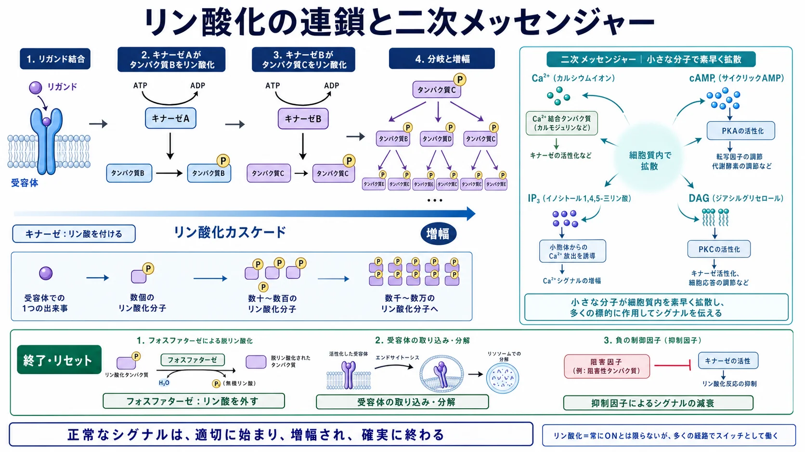
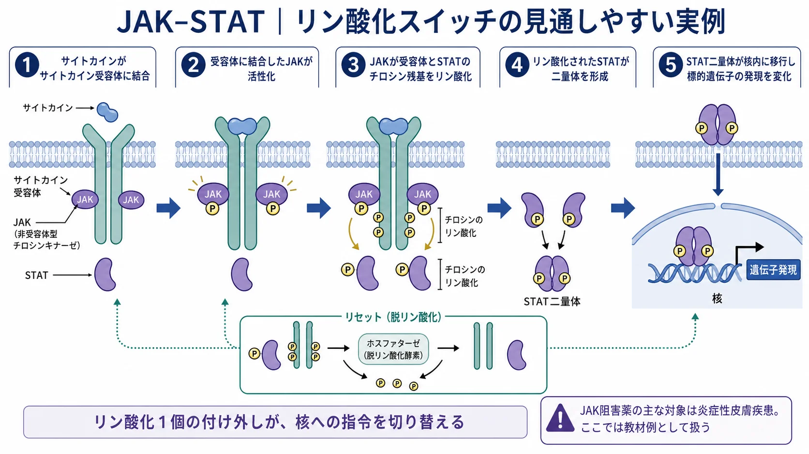
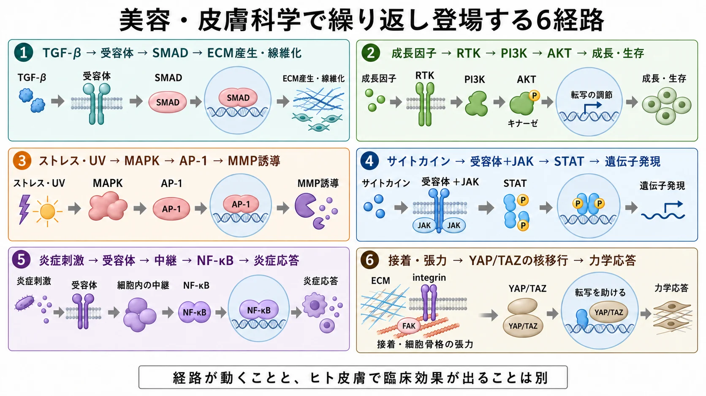
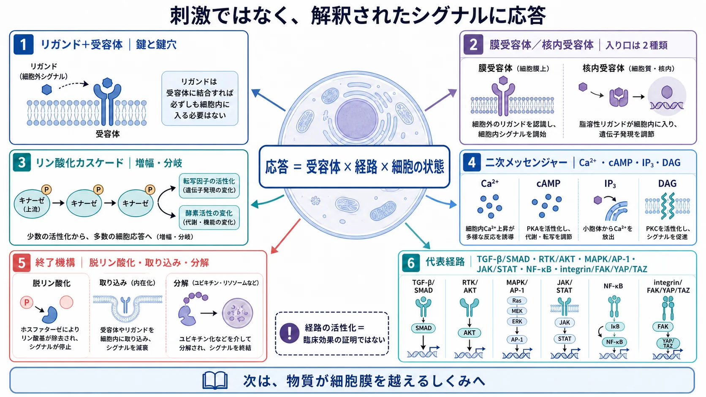

生化学・細胞生物学の基礎 ／ 情報をどう読むか
受容体と細胞内シグナル
公開 2026-08-16 ／ 最終更新 2026-10-06
皮膚の修復では線維芽細胞がコラーゲンを作り、炎症では免疫細胞などがサイトカインを放出します。こうした細胞の働きは、周囲から受ける刺激によって調節されています。
成長因子やサイトカインが受容体に結合すると、その情報が細胞内へ伝わり、酵素の活性や遺伝子の転写が変わります。受容体と細胞内シグナルは、刺激が細胞の応答につながる仕組みです。この流れを理解することが、美容医療で扱う修復や炎症を分子の働きから捉え、論文を読むための基礎になります。
この章の一言
受容体が刺激を受け取り、細胞内の分子が情報を伝え、代謝や遺伝子の働きが変わります。 応答は、刺激の強さに加え、受容体の量や情報を伝える仕組み、周囲の組織の状態によって変わります。
1 刺激を受け取ってから、細胞の応答が変わるまで
成長因子、サイトカイン、ホルモンなど、受容体に結合する分子をリガンド（ligand）と呼びます。受容体（receptor）はリガンドが結合するタンパク質で、細胞の応答を調節します。
- 受け取る：リガンドが受容体に結合し、受容体の状態が変わります。
- 伝える：受容体から細胞内の分子へ情報が伝わり、酵素の活性や、分子の量・働く場所が変わります。
- 応答する：代謝や分泌、細胞の動きなどが変わります。核の転写因子へ情報が伝わると、遺伝子の転写も変わります。
この情報伝達を細胞内シグナル伝達（signal transduction）と呼びます。転写因子は、DNAの情報をRNAへ写す過程を調節するタンパク質です。転写されたRNAからタンパク質が作られる過程は、DNAからタンパク質までで扱います。
経路図の矢印は、情報が伝わる順序を示します。前の分子が、次の分子へ変わる化学反応式ではありません。
2 膜受容体と核内受容体は、情報の受け取り方が異なる
ここでは、細胞膜にある受容体と、細胞内で働く核内受容体を比べます。リガンドが結合する場所と、情報を伝える方法が異なります。
膜受容体：細胞の外で受け取り、中へ伝える
多くの成長因子やサイトカインは、細胞膜の外側で受容体に結合します。受容体がその情報を細胞内へ中継するため、シグナルを伝えるためにligand自体が膜を通り抜ける必要はありません。
TGF-β受容体、サイトカイン受容体、RTK（receptor tyrosine kinase、受容体型チロシンキナーゼ）などが代表例です。それぞれ、細胞内へ情報を伝える仕組みが異なります。
RTKは、受容体自身の細胞内側にキナーゼとして働く部分を持ちます。キナーゼは、標的となる分子にリン酸基を付ける酵素です。チロシンはタンパク質を構成するアミノ酸の一つで、RTKは受容体自身やほかのタンパク質のチロシン残基にリン酸基を付けます。インスリン受容体やEGF受容体もRTKの仲間で、代謝・増殖・生存などの応答へつながります（Ebinaら, Cell, 1985）。
核内受容体：細胞内で受け取り、遺伝子の転写を調節する
ステロイドホルモン、レチノイン酸、活性型vitamin Dなどは、細胞内へ入って受容体に結合します。核内受容体は、DNAやほかの転写調節因子と協力して、どの遺伝子をどれだけ読むかを変えます。
受容体には、初めから核内にあるものと、グルココルチコイド受容体のように細胞質から核へ移るものがあります。

リガンドへの応答には、対応する受容体が必要です。同じ濃度のリガンドがあっても、受容体の種類や量が異なれば、細胞の応答も変わります。
3 細胞内で情報を伝え、応答を調節する
リン酸化で分子の働きを変える
膜受容体からの情報を伝える代表的な仕組みが、リン酸化です。タンパク質にリン酸基を付けると、その活性やほかの分子との結合、細胞内での位置が変わります。複数のタンパク質が順にリン酸化されて情報を伝える流れを、リン酸化の連鎖（phosphorylation cascade）と呼びます。
| 酵素 | 反応 | シグナル伝達での働き |
|---|---|---|
| kinase（キナーゼ） | リン酸基を付ける（リン酸化） | 次の分子へ情報を伝える。活性化した一つのキナーゼが複数の下流分子を活性化すると、シグナルが増幅する |
| phosphatase（フォスファターゼ） | リン酸基を外す（脱リン酸化） | 活性化に必要なリン酸基を外すと、シグナルを弱めたり終えたりする |
応答を弱めたり終えたりする仕組みには、脱リン酸化のほか、受容体の取り込み・分解や抑制性タンパク質もあります。増幅と終了の釣り合いが、応答の強さと持続時間を調節します。炎症を起こす刺激が続いたり、終了の仕組みが十分に働かなかったりすると、炎症に関わるシグナルも持続します（Ashallら, Science, 2009；→ 炎症と創傷治癒）。
リン酸化の効果は、標的とリン酸基が付く位置によって変わります。たとえば、ピルビン酸をアセチルCoAへ変える酵素PDHは、リン酸化されると活性が下がります（→ TCA回路）。
キナーゼには、RTKのようにタンパク質のチロシン残基へリン酸基を付けるものと、セリンやトレオニン残基へ付けるものがあります。どの部位に付けるかと、代謝・増殖・炎症などのどの応答につながるかは、分けて考えます。
二次メッセンジャーが、細胞内で情報を広げる
受容体が刺激を受けると、細胞内で小さな分子の量や濃度が変わり、ほかのタンパク質へ情報を伝えます。これらを二次メッセンジャー（second messenger）と呼びます。
- Ca²⁺（カルシウムイオン）：細胞質で濃度が上がると、カルシウムに反応するタンパク質が働きます。
- cAMP（環状AMP）：プロテインキナーゼA（PKA）などを活性化し、代謝や転写を調節します。
- IP₃（イノシトール三リン酸）：小胞体からCa²⁺を放出させ、細胞質のCa²⁺濃度を上げます。
- DAG（ジアシルグリセロール）：膜にとどまり、プロテインキナーゼC（PKC）の一部を活性化します。
小胞体とミトコンドリアの間のCa²⁺の受け渡しは、オルガネラはどう連携するかでも扱います。

JAK–STAT：受容体から核への中継の例
JAK–STATは、一部のサイトカインの刺激を核へ伝える経路です。JAKは受容体に結びついて働くチロシンキナーゼ、STATは転写因子です。RTKでは受容体自身がキナーゼとして働くのに対し、この経路では受容体に結びついたJAKがリン酸化を担います。
サイトカインが受容体に結合するとJAKが活性化し、STATのチロシン残基をリン酸化します。代表的な流れでは、リン酸化されたSTATが二つ組になり、核で標的遺伝子の転写を調節します（Shuaiら, Cell, 1994）。
論文に出てくるpSTATは、リン酸化されたSTATを示します。STATの総量と、そのうちリン酸化されている量を区別しているわけです。

4 代表的な経路を、入力と働きで整理する
ここでは、情報を伝える経路と、核で遺伝子の転写を変える応答を整理します。経路名には、役割の異なる分子が含まれています。
- 刺激を与える分子：TGF-βなどのリガンドは、受容体に結合して情報伝達のきっかけになります。
- 情報を中継する酵素：JAK・MAPK・AKTなどのキナーゼは、標的をリン酸化して働きを変えます。PI3Kは膜のリン脂質をリン酸化します。RTKは受容体自身がキナーゼとして働きます。
- 核で転写を調節する分子：STAT・SMAD・AP-1・NF-κB・NRF2（Nrf2）は転写因子です。YAP/TAZは転写因子の働きを助けます。
キナーゼが転写因子を活性化する経路もあれば、NRF2のように、分解を抑えて核で働く量を増やす仕組みもあります。リン酸化は、細胞の応答を調節する方法の一つです。
ECMは細胞外基質です。integrin（インテグリン）はECMへの接着を担う受容体、FAKは接着部で働くキナーゼです。接着や張力がYAP/TAZの働きを変える仕組みは、次の節で説明します。
| 経路・転写応答と刺激（入力） | 細胞内で起きること | 代表的な細胞の応答（出力） |
|---|---|---|
| TGF-β – SMAD 入力：TGF-β | 受容体がSMADをリン酸化し、SMADが核で遺伝子の転写を調節する | 線維芽細胞がコラーゲンなどのECMを多く作る。過剰に蓄積すると線維化につながる（Chenら, 1999；→ 細胞外基質（ECM）） |
| RTK – PI3K – AKT 入力：成長因子・インスリン／IGF-1 | 受容体からPI3K・AKTへ伝わり、代謝酵素やタンパク質合成を調節する | インスリン刺激で筋・脂肪細胞の糖の取り込みが増える（Congら, 1997）。成長刺激では、タンパク質合成が進み、細胞が大きくなる（→ mTORC1――タンパク質合成を調節する仕組み） |
| MAPK – AP-1 入力：紫外線・ストレス・成長因子 | MAPK群がAP-1などの転写因子の働きを変える | 紫外線を受けた皮膚では、ECMを分解する酵素群MMPが増え、コラーゲンの分解が進む（Fisherら, 1996）。成長因子の刺激では、細胞の増殖が促される |
| JAK – STAT 入力：サイトカイン | 受容体に結びついたJAKがSTATをリン酸化し、STATが核で遺伝子の転写を調節する | IL-4・IL-13を受けた角化細胞では、好酸球を呼び寄せるケモカインCCL26の産生が増える（前節の例） |
| NF-κB 入力：TNF・IL-1など | NF-κBが核で炎症に関わる遺伝子の転写を促す | 炎症性サイトカインや、免疫細胞を呼び寄せるケモカインの産生が増え、炎症反応が進む（→ 炎症と創傷治癒） |
| NRF2 入力：酸化ストレスなど | NRF2の分解が抑えられ、核で抗酸化・解毒に働く遺伝子の転写を促す | グルタチオンを作る酵素や解毒酵素の産生が増え、酸化ストレスへの防御能力が高まる（Chanら, 2000；→ 酸化ストレスと抗酸化） |
| integrin・YAP/TAZ 入力：ECMの硬さ・張力 | ECMへの接着と細胞骨格の張力に応じて、YAP/TAZが核で転写を助ける | 培養した血管内皮細胞では、広く接着して広がれるとYAP/TAZが核で働き、増殖が促される（次節の例；→ 細胞外基質（ECM）） |
NRF2は通常、KEAP1というタンパク質を介して分解されます。酸化ストレスによってこの分解が抑えられると、核で働くNRF2が増えます（Kobayashiら, 2006）。詳しい仕組みは酸化ストレスと抗酸化で扱います。
用語：NRF2と呼ばれる二つの因子
- 本章のNRF2：NF-E2-related factor 2。遺伝子名はNFE2L2です。抗酸化・解毒に働く遺伝子の転写を調節します（Moiら, PNAS, 1994）。
- ミトコンドリア関連のNRF-2：nuclear respiratory factor 2。GABPとも呼ばれ、ミトコンドリアの呼吸に必要な遺伝子の転写を調節します。GABPAは、この因子のαサブユニットを作る遺伝子です（Virbasiusら, Genes Dev, 1993）。
同じ略語が使われますが、別の因子です。大文字・小文字やハイフンだけでは確実に区別できないため、正式名や遺伝子名を確認します。
それぞれの経路が組織で何を変えるかは、炎症と創傷治癒・細胞外基質（ECM）・線維芽細胞とコラーゲンなどで扱います。

論文の測定結果は、どの段階の変化を示しているか
| 測っているもの | 分かること |
|---|---|
| 受容体タンパク質の量 | 刺激を受け取る受容体が、どの程度あるか |
| pSTATなどのリン酸化された分子 | 情報伝達に使われる分子の、リン酸化の状態 |
| 標的遺伝子のメッセンジャーRNA（mRNA） | 遺伝子から作られたRNAの量 |
これらは細胞の応答を知る手がかりです。タンパク質の量や働き、組織に起きた変化まで確認すると、測定結果が作用のどの部分を説明しているかを判断できます。
5 ECMの硬さや張力も、細胞の応答を変える
細胞は、成長因子などの分子だけでなく、接着しているECMの硬さや、そこにかかる張力にも応答します。皮膚では、線維芽細胞と、その周囲のコラーゲンとの関係が一例です。
integrinは、細胞をECMへ接着させる受容体です。その接着部は細胞内の細胞骨格につながり、細胞とECMの間で力が伝わります。接着部では、FAKというキナーゼなども働きます。
ECMへの接着や細胞骨格の張力は、YAP/TAZの核での働きにも影響します。YAP/TAZは、DNAに結合する転写因子を助ける転写共役因子です。培養細胞では、基材の硬さや細胞の広がり方によってYAP/TAZの核への移行が変わり、増殖や分化などの応答が変わることが示されています（Dupontら, Nature, 2011）。
加齢したヒト皮膚では、コラーゲンの断片化によって線維芽細胞が広がりにくくなり、コラーゲン産生も低下します。周囲の支持を高めると、その産生が増えることが確認されています（Quanら, J Invest Dermatol, 2013）。ECMの状態は、細胞の形と働きを変える条件でもあります（→ 細胞外基質（ECM）・線維芽細胞とコラーゲン）。
同じ刺激でも、受容体の種類や量、細胞内で情報を増幅・終了する仕組み、周囲のECMの状態が異なれば、応答も変わります。刺激の強さとともに、受け取る細胞と組織の状態を考えることが重要です。
この章の到達点
- リガンドが受容体へ結合すると、細胞内へ情報が伝わります。膜受容体と核内受容体では、受け取る場所と伝え方が異なります。
- キナーゼはリン酸基を付け、フォスファターゼは外します。リン酸化の効果は標的と位置によって変わり、増幅と終了の仕組みが応答の強さや持続時間を調節します。
- 経路名に含まれる分子を、リガンド・受容体・キナーゼ・転写因子などの役割に対応づけると、何を測定した論文かを理解しやすくなります。
- 応答は刺激の強さだけでなく、受容体や情報伝達の仕組み、周囲のECMの状態によっても変わります。
この章のまとめ

細胞膜と物質輸送では、物質が細胞膜を越えて出入りする仕組みを扱います。ここで見た情報の伝達と、物質そのものの移動を結びつけて理解できます。
この章の更新
- 刺激の受容・伝達・応答を軸に全章を整理。RTKや二次メッセンジャー、JAK–STATと阻害薬の作用、論文の測定段階を明確化し、代表経路図と入力・出力の表を修正し、全経路の出力を具体的な細胞の応答で説明。NRF2を抗酸化・解毒の転写応答として代表経路表で紹介し、KEAP1による分解の調節をリン酸化の説明と分けて補足。代表経路の導入でリガンド・中継酵素・転写因子の役割を区別。NRF2とNRF-2（GABP）の略語の重複を補足。導入とリガンドの定義を整え、膜輸送の重複補足を削除。増幅と終了の説明をキナーゼ・フォスファターゼの表へ統合
- 通読して説明の順序・重複・見出しと図の配置を整理
- 初公開